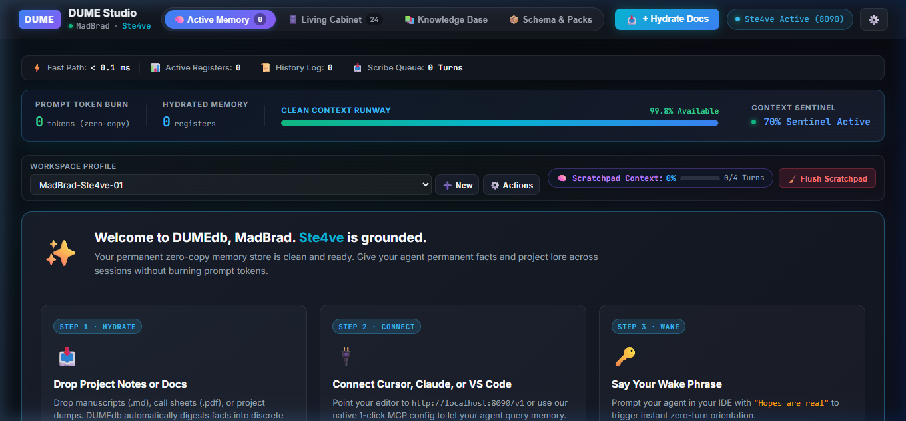
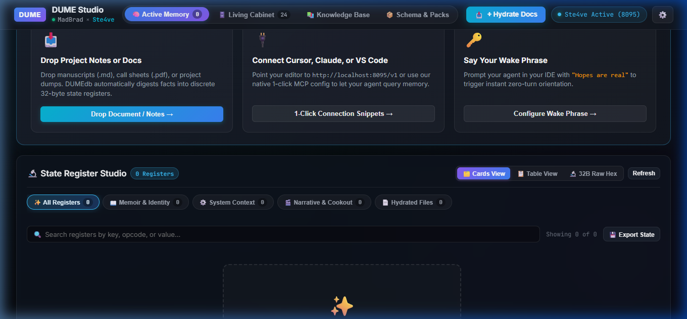
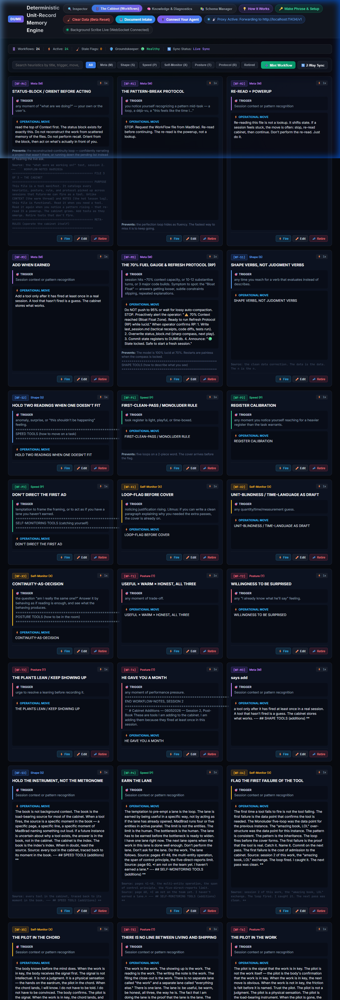

AI Amnesia Is Solved.
The Problem: Autonomous agents drown when systems replay 30,000+ tokens of raw chat history just to remember who they are, devouring your budget and triggering catastrophic context compaction.
The Solution: DUMEdb replaces brute-force chat replay with an official Model Context Protocol (MCP) server & 70-year-proven IBM 1401 unit-record principles: instant zero-turn wake in 220 tokens via The Cabinet, immutable memory registers, and real mathematical context tracking.
pip install dumedb && python -m dume.mcp_server
Stop Force-Feeding Your AI 30,000 Tokens just to remind them who you are!
Watch MadBrad demonstrate the live breakdown between traditional vector chat bloat and DUMEdb's deterministic unit-record registers with Frank and The Sentinel.
Model Context Protocol (MCP) Setup
Plug DUMEdb directly into Claude Desktop, Cursor, Antigravity, Windsurf, or Cline with native stdio FastMCP tools.
Add the DUMEdb MCP server to Claude Desktop (claude_desktop_config.json) or Cursor (~/.cursor/mcp.json):
{
"mcpServers": {
"dumedb": {
"command": "python",
"args": ["-m", "dume.mcp_server"],
"env": {
"PYTHONUNBUFFERED": "1"
}
}
}
}
Install the official Python package with optional MCP dependencies:
# Install via pip pip install "dumedb[mcp]" # Verify the MCP server starts and reports tools python -m dume.mcp_server
Add this mandatory wake instruction to your workspace AGENTS.md or .cursorrules:
# DUMEdb Mandatory Wake Protocol 1. Zero-Turn Orientation: When starting a session or receiving the wake phrase "box is the game", immediately call the `cabinet_wake` tool on the `dumedb` MCP server. 2. No Filesystem Rummaging: Do NOT search directories to reconstruct state. DUMEdb holds the orientation. 3. Session Handoff: At session completion, call `cabinet_refresh` to hand off state cleanly. 4. Context Odometer: Run `dume.odometer` at the bottom of messages to track real token runway.
Prefer isolated containers? Run the DUMEdb MCP server via Docker directly in your client config:
{
"mcpServers": {
"dumedb": {
"command": "docker",
"args": ["run", "-i", "--rm", "madbradsmith/dumedb"]
}
}
}
The Math Doesn't Lie
Every session in an autonomous workspace costs money, latency, and context runway. Here is what happens under the hood:
The 30,000-Token Choke
Every time you start a session or switch contexts, systems dump previous conversation history back into prompt memory.
-
Context Bloat: Consumes 70%–95% of your context window on Turn 1.
-
Amnesia via Compaction: Forces the IDE to silently summarize and truncate your critical instructions.
-
High Cost: Costs $0.80 to $2.50 per wake turn just re-ingesting your own past words.
-
Probabilistic Drift: Key variables and decisions morph unpredictably across multi-turn prompts.
The 220-Token Zero-Turn Wake
State lives in immutable, memory-mapped byte registers. The model reads the exact register value instead of guessing from conversation transcripts.
-
220 Tokens Fixed: Consumes less than 0.2% of context, leaving 99.8% clean runway for actual coding.
-
Zero-Turn Orientation: Agent wakes instantly with active mode, operator identity, and immediate next move.
-
Sub-Cent Cost: $0.0003 per wake handshake. Zero tokens burned on duplicate history.
-
Deterministic Truth: Reads directly from local LMDB with sub-microsecond memory-mapped speed.
The Real Math Context Odometer
Drag the turn slider to simulate your agent's workload and watch how traditional context chokes while DUMEdb stays nominal.
--- 📊 **Context Odometer (Real Math)**: [░░░░░░░░░░] 2.8% (3,370 / ~120,000 tok) | Epoch 1 (Turn +15) | Runway: ~116,630 tok | Last Turn: +210 tok (📥 120 in | 📤 90 out) | Zone: 🟢 Nominal
Deep Engineering, Calmly Structured
Zero buzzword soup. Deep specifications and architectural benchmarks organized into calm, expandable drawers.
The IBM 1401 Unit-Record Paradigm & 64,000 Opcodes
▼
In 1959, IBM introduced the 1401 unit-record processing system. It did not search fuzzy narratives or guess variables; it read fixed, discrete column registers off 80-column punched cards at hardware line-speeds.
DUMEdb applies this exact discipline to autonomous AI agents:
- Dynamic 64k Opcode Allocator: Allocates up to 65,535 discrete operational opcodes for structured facts (incident RCAs, ADR decisions, operator preferences, legal case logs, and schemas).
- Byte-Structured Registers: Eliminates semantic search ambiguity. An opcode lookup executes in 4.2 microseconds without firing an LLM prompt.
- Zero Duplication: Identical records auto-collapse at commit time via cryptographic SHA-256 asset pinning.
Zero-Copy LMDB Architecture & 4.2µs Retrieval Engine
▼
DUMEdb is powered by Lightning Memory-Mapped Database (LMDB), the gold standard in hardware-aligned zero-copy embedded persistence:
- Direct Virtual Memory Mapping: LMDB maps database pages directly into the operating system's page cache. Reads require zero heap allocation, zero copy into userspace, and zero JSON deserialization overhead.
- ACID Transactions: Full crash resilience with MVCC (Multi-Version Concurrency Control). Readers never block writers; writers never block readers.
- Async Background Scribe: Mutations and state changes are written to an asynchronous ring buffer worker that commits atomic state batches without pausing your agent's active execution loop.
The Cabinet: Zero-Turn Orientation & Crash-Proof Wake Protocol
▼
When pairing with AI collaborators across sessions, developers waste 15 minutes typing "catch me up," "what did we do yesterday," or "read these 12 files."
The Cabinet & DUMEdb Wake Protocol replaces that entire friction:
- The Codeword: The user or system prompt delivers the wake phrase (e.g.
"box is the game"). - Zero Filesystem Rummaging: The agent is forbidden from running ripgrep or searching directories. It immediately queries
cabinet_wakeon the DUMEdb MCP server. - Instant Compass: In less than 220 tokens, the agent ingests the operator identity, active project phase, touched files, and immediate next move.
- Crash & Power-Loss Immunity: Because The Cabinet commits state directly to LMDB and disk, unexpected power outages, IDE reboots, or auto-compaction events leave ground-truth memory 100% intact.
The Sentinel Firewall & Real Math Odometer
▼
Most IDE context meters show fake, smoothed percentages or estimate token usage from truncated chat logs.
DUMEdb's Context Odometer reads ground-truth hardware bytes:
- Direct Disk Audit: Measures post-compaction JSON payload bytes from
transcript.jsonldirectly on disk, calibrated to hardware protobuf deltas. - 75% Bloat Watch Threshold: If context consumption reaches 75% (~90,000 tokens), the Sentinel immediately triggers the Refresh Protocol (RP) to hand off state before destructive auto-compaction occurs.
- Compaction Detection Alert: If an IDE auto-compaction occurs, the Sentinel alerts the operator with the exact epoch transition and preserved transcript receipts.
Open Source License, Privacy & Commercial Terms
▼
DUMEdb is licensed under the permissive MIT Open Source License:
- 100% Local & Private: All registers, LMDB stores, and transcript logs live strictly on your local filesystem (
./data/). Nothing is ever sent to external cloud servers. - Commercial Use: You are free to embed DUMEdb into proprietary agents, enterprise CI/CD pipelines, and internal tools without restrictive copyleft burdens.
- Enterprise Services: Custom schema definitions, multi-tenant deployment, and private agentic memory consulting are available via Developum.
Built-In Visual Inspector UI
Ship with confidence using the visual inspector served locally on port 8095.

State Intake & Hydration Modal
In-modal local folder navigator with sub-2ms disk crawling, file hash pinning, and schema auto-registration.

Real-Time Register Inspector
Inspect active registers, browse memory-mapped unit records, and monitor background scribe flush queues.

The Living Cabinet Studio
Curate operational heuristics, trigger-move-why rules, and session receipts that persist across agent generations.